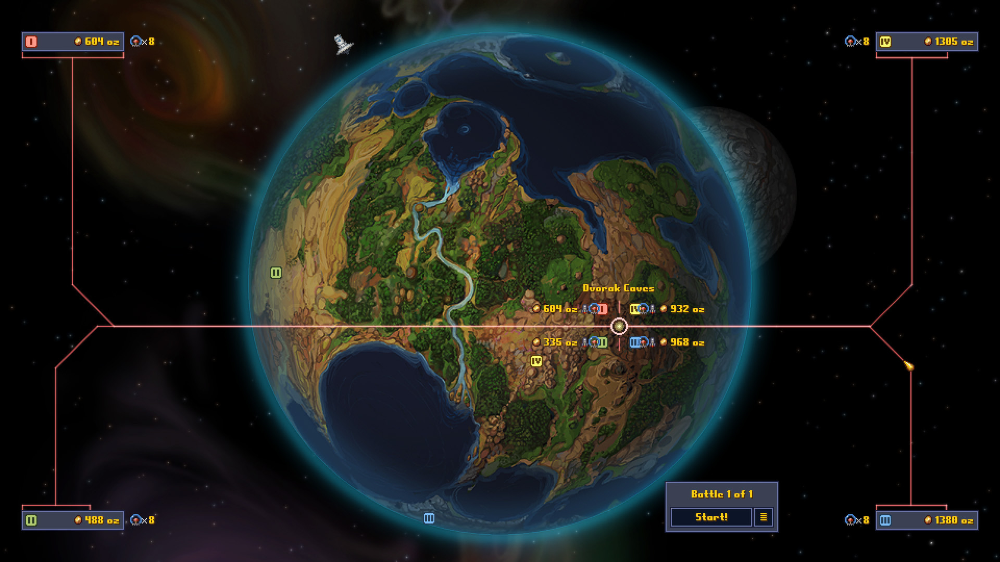

Nemrég kezdtem el játszani a Cortex Command (2012-09-28), amit a Unknown Studio fejlesztett. Már az első percekben elragadott a hangulat, ahogy beléptem a játék világába. A grafikája lenyűgöző, a fények és árnyékok olyanok, mintha tényleg ott lennék. További információk a [Wikipédián](#), a [Steam oldalon](#) vagy a [Metacritic vélemények](#) között találhatóak.
A kezdeti küldetések során azonnal éreztem, mennyire gondosan lett kidolgozva a játékmenet. A karakterek reakciói, a párbeszédek, minden apró részlet életszerű és szórakoztató. Ahogy haladtam előre, felfedeztem titkos szobákat, mellékküldetéseket, és néhány igazán jól elrejtett lootot, ami izgalmas felfedezést jelentett.
Az online mód új dimenziókat nyitott. Barátokkal együtt játszva minden egyes küldetés más élmény, a csapatmunka és stratégiai döntések folyamatosan izgalomban tartanak. Egy-egy pillanatban majdnem kifutottunk az időből, de a gyors reakcióinkkal sikerült teljesíteni a küldetést.
A fegyverek és képességek használata során rájöttem, hogy az apró trükkök jelentős előnyt jelentenek. Például a Cortex Command-ban a fénykardot ügyesen használva egy pillanat alatt megfordítható egy harc. A [Steam közösség](#) szerint ezek a taktikák hatékonyak a fő küldetések során.
A harc során a hanghatások lenyűgözőek. A lövések és robbanások pontosan úgy szólnak, ahogy a valóságban hallanám, és ez fokozza a játékélményt. A különböző pályák, legyen szó városi utcákról vagy sivatagi terepről, mind más-más kihívást adnak.
Ha a hivatalos cheat-ekről van szó: Nem találtam hivatalos cheat-eket a játékhoz a neten.
A tippekkel kapcsolatban: Nem találtam hivatalos tippeket a játékhoz a neten.
Összességében a játék lenyűgöző: a felfedezés, a stratégia és a történet találkozik, minden részletre odafigyeltek. A patch-ek és frissítések folyamatosan javítják a játékot, így mindig van új kihívás és új élmény.
A barátokkal együtt töltött idő, az online kooperáció, a különleges küldetések és a rejtett titkok mind hozzájárulnak a teljes játékélményhez. Minden egyes alkalommal valami új történik, mintha a játék mindig velem együtt fejlődne.
Ahogy játszottam, észrevettem, hogy az apró részletek, például a karakterek mozgása, a fények változása és a hangok, mind élményszerűvé teszik az egészet. Mintha egy élő világban lennék, ami folyamatosan változik és reagál a tetteimre.